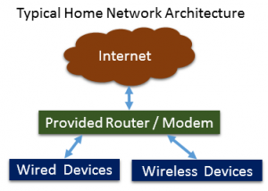
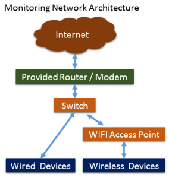
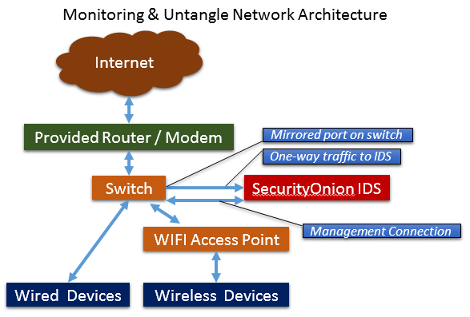
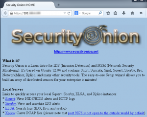

Security Onion Home Setup¶
{kind=link}
What we want to change our set up to:
{kind=link}
We need to set up a switch to use as a mirror port or span. This will allow a user to configure one of the network connections on the switch to be able to hear all the traffic from all the other ports. This is for an Intrusion Detection System (IDS) such as Security Onion since we need to be able to see all the traffic.
Example switches: Netgear
Enterprise Switch: Cisco
Next we want to add the SecurityOnion IDS device via a one-way connection to the switch and then set up a secondary connection to that same switch for management traffic to the IDS. If we don’t have the second connection, then we can’t perform look-ups on systems and get updates on the IDS. You can also plug this management connection right into the router but, if you do, some of the network traffic will not be alerted on. Traffic from the IDS to the Internet will bypass the IDS and this isn’t something we want.
{kind=link}
Setting up Security Onion Home Setup¶
For example, here are the steps you can use on most Linux distributions to download and verify our Security Onion ISO image.
Download the signing key:
wget https://raw.githubusercontent.com/Security-Onion-Solutions/security-onion/master/KEYS
Import the signing key:
gpg --import KEYS
Download the signature file for the ISO:
wget https://github.com/Security-Onion-Solutions/security-onion/raw/master/sigs/securityonion-16.04.4.2.iso.sig
Download the ISO image:
wget https://github.com/Security-Onion-Solutions/security-onion/releases/download/v16.04.4.2_20180615/securityonion-16.04.4.2.iso
Verify the downloaded ISO image using the signature file:
gpg --verify securityonion-16.04.4.2.iso.sig securityonion-16.04.4.2.iso
The output should show “Good signature” and the Primary key fingerprint should match what’s shown below:”
gpg: Signature made Tue 19 Jun 2018 03:10:02 PM EDT using RSA key ID ED6CF680
gpg: Good signature from “xxx xxx <xxx.xxx@gmail.com>”
gpg: WARNING: This key is not certified with a trusted signature!
gpg: There is no indication that the signature belongs to the owner.
Primary key fingerprint: BD56 2813 E345 A068 5FBB 91D3 788F 62F8 ED6C F680
After the ISO is verified go to:
What kind of equipment to use¶
You can even use an old laptop, install Security Onion on that system and just plug in the ethernet network port to the mirrored port on the switch and it will work.
To have the laptop in a closet or other space and access it remote, you’ll need to add another network interface You can use this USB to Ethernet adapter Configure this built-in adapter to remain on the mirrored port and configure the USB to Ethernet adapter to have a static IP address on the internal home network. This gives the capability to log into the SecurityOnion system via SSH or HTTPS to monitor and manage the system. You might also want to have a fan keeping the system cool.
Usage¶
Syslog Server Security Onion has a syslog server for collecting logs from other devices on the network. It will aggregate and alert on these logs if desired.
HTTPS Front Page You can access Security Onion from the device you install it on if that has a keyboard, mouse, and monitor, via SSH or via HTTPS. The HTTPS web page looks like this:
{kind=link}
ELSA¶
ELSA is a centralized syslog framework built on Syslog-NG, MySQL, and Sphinx full-text search. It provides a fully asynchronous web-based query interface that normalizes logs and makes searching billions of them for arbitrary strings as easy as searching the web. It also includes tools for assigning permissions for viewing the logs as well as email based alerts, scheduled queries, and graphing.
Warning
Not complete, more to be added..